How finance, consulting and professional services firms run their AI, data, finance and project management upskilling on Kubicle, plus white papers our practitioners cite when they're scoping the next rollout.

How HEINEKEN Beverages leveraged Kubicle's tailored learning solutions to unify and enhance the skills of their diverse team following a significant merger.
Read case study
How Jotun is enhancing data‑driven decision‑making with comprehensive training from Kubicle.
Read case study
How Arthur D. Little leveraged Kubicle to standardize skills and enhance global workforce productivity.
Read case study
How Onafriq partnered with Kubicle to fill the skill gaps in their global finance teams and build confidence in their data proficiency.
Read case study
How Aviense enhanced productivity and client service with targeted training from Kubicle.
Read case studyHow Nurve Partners enhanced consultant skills and client experience with comprehensive training from Kubicle.
Read case studyA practitioner‑ready AI use policy you can adapt for your organization. Covers acceptable use, data handling, model selection, prompt hygiene, oversight and review cadence.
Download PDFWe're publishing new ones every quarter. Subscribe below and we'll send the next one.
Every customer story on this page started with a 30‑minute consultation. Tell us about your team, the deliverables you're trying to lift, and we'll come back with a benchmarked persona map and a sample rollout shape.